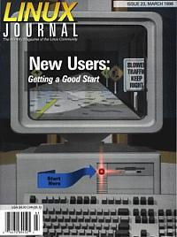

Shutdown Archive web server
Search:
Linux Journal
Issue #23/March 1996

Features
Linux Distributions Compared
There are more Linux distributions than ever. Our editor takes you on a tour to help you decide which is best for you.
Linux Distributions Features Comparison Chart
Graphic Formats for Linux
by Gerald Graef
What ARE all those graphics storage formats and which should you use? Gerald Graef explains the methods and benefits.
News & Articles
Geomview
by Tim Jones
Want a way to view and animate 3-D objects? Then Geomview may help you.
Ext2tools for Linux
by Robert A. Dalrymple
How to use Windows and Linux on the same PC while losing neither your mind nor your files.
Running Windows Applications NOW
by Ron Bardarson
Need to run MS Windows Applications right away? Then DESQview/X offers a solution.
Columns
Kernel Korner
Dynamic Kernels - Modularized Device Drivers
Letters to the Editor
Stop the Presses
Take Command
The cpio command
Book Review
Linux Configuration and Installation
Book Review
Building a Linux Internet Server
New Products
Directories & References
Upcoming Events
Consultants Directory
Archive Index
Shutdown Archive web server
Search:
Copyright © 1994 - 2018
Linux Journal
. All rights reserved.